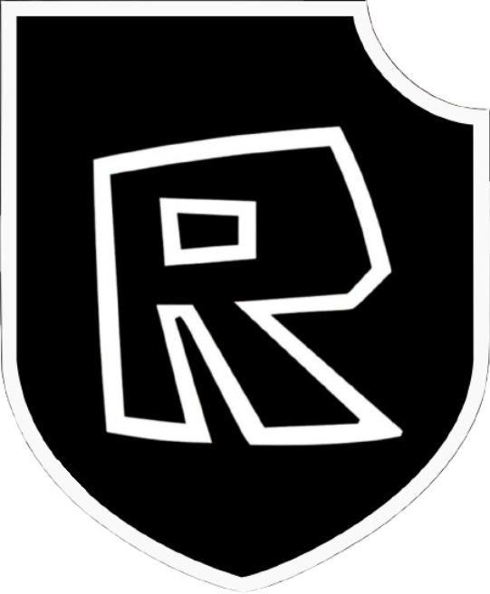

Robloxian Resistance Front 
The Robloxian Resistance Front is a front against the many unwanted groups of Roblox, and the general organization and running of Roblox. Simply put, Roblox is done for. The ROBLOX Corporation has completely abandoned what made the original The community is fun and interesting. And with how much the platform has sucken, it's time for a hard reset. Though the Robloxian Resistance Front is a LARP group, copying the antics of another general sect of groups, we are using this front to spread our thoughts. Also, it must be made clear that despite taking "inspiration" from certain real-life groups, in no way is their ideology reflected within our ranks, and we will make sure of that.